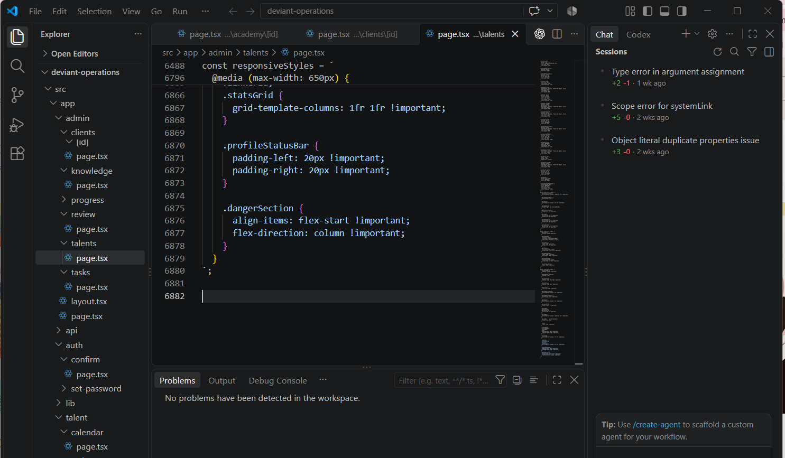
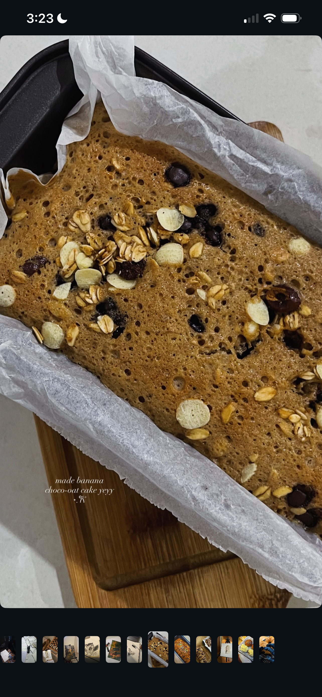
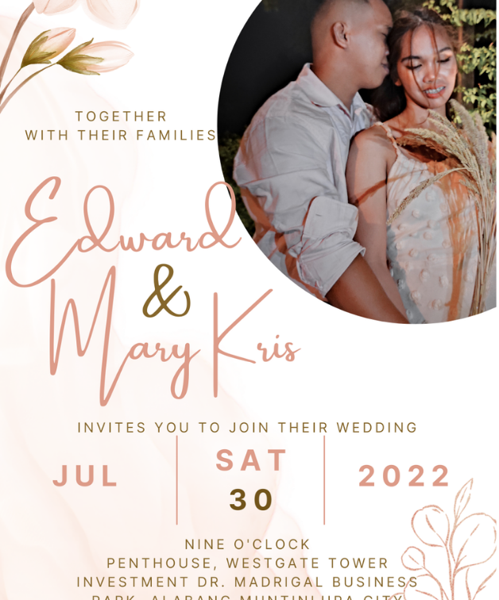

Creative assets
Challenge looks, covers, posters, carousels, emails and the visual decisions that keep a brand recognizable.
I work across creative direction, content, video, social media and the digital systems around them. I like being close enough to the work to understand how the pieces connect, then making those pieces easier to build, launch and keep moving.
Most of my current work sits behind a growing fitness brand, where I move between creative execution and the practical steps that make the output usable: editing, design, uploads, app updates, launch support, organization and handoff.

Creative operations, content, video, app support and systems for a growing fitness brand.
I ended up liking the middle: the place where a creative idea has to become a real deliverable, get uploaded somewhere, go live, perform, and then become easier to repeat.
Challenge looks, covers, posters, carousels, emails and the visual decisions that keep a brand recognizable.
Recipes, workouts, speaking videos, vlogs, teasers and short-form edits shaped around timing, cuts, framing and attention.
Uploads, descriptions, categories, schedules, push notifications, backend review and member-facing presentation.
Batching, review, handoff, training and practical systems that help the publishing rhythm keep moving.
These are not the whole story, only a few moments that make me proud of the work behind them.
Net follows from May 1 to Oct 2, 2026 during a period of regular organic content management.
Reached 100K subscribers in the first month of our partnership through steady short-form repurposing.
1,880 sends and 691 clicks from one keyword-triggered challenge campaign.
Long-form video, app content operations, launches, creative production and ongoing support.
I currently support SAVAGE by Natalie Heso across content, video, social media, app updates, creative assets, automation and launch support. The work changes from day to day, but the pattern is consistent: make it, prepare it, place it where it belongs, review it, and keep the next piece moving.


Montage-style edits and speed cuts that create a stop-motion feel are some of the techniques I use most because they keep viewers entertained and immersed. I also edit audio meditations, speaking videos, vlogs, teaser videos, recipes and workout content.
Quick visual sequencing that keeps the process readable without slowing the reel down.
Fast cuts and clean framing used to keep attention on the action.
A short launch teaser built around energy, anticipation and a clear visual hook.
Movement, close framing and pacing used to make the food feel tactile and watchable.
A simple sequence shaped for a social-first viewing rhythm.





My interests keep teaching me new ways to observe, make, refine and communicate. I do not need every interest to become a profession. I do like noticing how each one changes the way I see things.
“The thread was never the job title. The thread was learning how things work.”